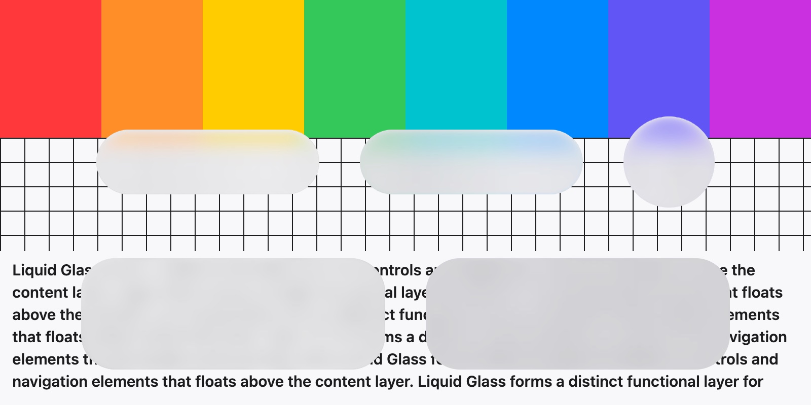

Blur is not glass.
Most "glass" on the web is a blurred rectangle. Real glass has a thickness. Light hits the curved rim, bends, and drags the background along with it. Watch the stripes at the edges.
backdrop-filter: blur(14px)A frosted rectangle. Flat edges, no depth.<ag-glass>A slab with a curved rim. The edge bends what is behind it.Light bends at the edge.
For every pixel we take the slope of the rim, bend the view ray with Snell's law, and store how far it moved. Chromium runs that map as a filter on whatever is behind the element. Three passes with slightly different strength, one per colour, give the thin rainbow at the rim.
These are the real components. The sliders drive the same parameters you get in code.
We checked our work against Apple's.
A small SwiftUI app draws Apple's .glassEffect over the same pictures, at the same sizes. We screenshot both, compare every pixel, and let a search nudge our parameters until the difference stops shrinking. Drag the line.

Mean absolute error per colour channel, 0 to 255 scale, over each glass shape plus a 10 px margin, two scenes, macOS 27. The biggest surprise: Apple's Clear glass is frosted, about 16 px of blur. We had it at 1.6.
Controls that notice your finger.
Knobs are solid at rest and turn into lenses while you hold them. Menus grow out of their buttons. Selections stretch on the way to where you tapped. Go on, touch everything.
Looks right in an actual app.
Scroll the feed and the tab bar shrinks to get out of the way. Drag across it and the selection follows as a lens. Tap an album and a sheet floats up, inset so the content peeks around it. Pull it up and it goes flush and more opaque.
Corners are concentric. The sheet sits 8 px inside a 55 px device corner, so its corner is 47 px.
Two drops, one glass.
Bring glass shapes close and they melt into one surface, with one rim and one refraction. Move your pointer over it, or drag a finger sideways across it.
Two lines to try it.
One CSS file, one script. Every element works in any framework. React and Vue get typed wrappers with the usual props, events and v-model.